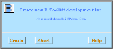

Before using the B-Toolkit the $BKIT
environment variable must be correctly set, and the licence daemon
BToolkitd must be running.
Other settings should then be made through the Options
once the B-Toolkit has been started.
The B-Toolkit is invoked by issuing the command $BKIT/BToolkit
(or just BToolkit if the directory $BKIT is in the current
path) from a suitable development directory - any directory in which you
have read-write permission and which you intend to be the top-level directory
for all new specification, design and implementation source files in this
development.
If the toolkit is invoked for the first time in a directory where
there is no existing development environment, the
Change Directory file selection panel
appears; if the subsequently selected directory is not already
an existing BToolkit development directory, a motif panel appears to
ask the user whether a new environment should be created.

See figure.
If the reply
is Cancel then the toolkit is exited (unless
called through TopBar->Utils->ChangeDirectory ); if the reply is OK
a new development environment is created, consisting of a set of development
directories and configuration files.
The Windows
The Motif interface to the
B-Toolkit consists of two windows: the session window (the window from
which the toolkit is invoked) and the B-Toolkit Motif panel (which is created).
All interaction takes place in the main panel.
On start-up, the B-Toolkit Motif panel appears.
The panel is divided into a number of distinct areas as follows, starting
from the top:
-
The Top Bar which gives access
to a number of general facilities.
-
The Environment Panel for
changing environments (initially the Main
Environment) including the B Logo.
-
A Panel displaying the set of command tools appropriate to the current
environment.
-
The Constructs Area
which lists, down the right-hand side, all of the constructs currently
under configuration management. The term ``construct'' is used to refer
to the different types of Abstract Machine (machine, refinement or implementation)
and also to ``system bases'', ``set enumerations'', ``interfaces'', ``documents'',
``proof files'' and so on. A number of different files may be associated
with each construct. Down the left-hand side are columns of buttons for
the invocation of various commands on the corresponding construct. These
commands are indicated in the Command
Bar above the constructs area. Only those commands whose buttons
are in full colour can be invoked; this serves to indicate, also, the status
of each construct.
-
The Display Area which
serves to display messages from the toolkit relating to its current activity.
The Constructs Area
and Display Area together
form a paned window; their relative sizes can be altered by vertically
sliding the grip that appears on the right between them.
The Mouse
Only the left-hand mouse button is used in the B-Toolkit interface. It
is used to select menus, tools and commands by a single click. Clicking
on many of the main panel entities will also bring up on-line help information.
Double-clicking on items in selection boxes is a short-cut for a single
click on that item, followed by clicking on the OK button to perform the
default action.
Subsidiary Panels
Some of the commands activated from the Main panel popup a subsidiary panel
associated with output from the B-Platform.
This panel displays information as the tool is executed, after which it
is popped down leaving a copy of the display in the Display area in the
Main panel.
Other panels are described under the appropriate tool descriptions.
The Top Bar
Except for Interrupt, each item on the Menu bar activates
a pull-down menu; selection is either by clicking with the mouse, or from
the keyboard by using the 'command' key (marked with a diamond) simultaneously
with the underlined letter in the menu name (its mnemonic).
Whilst a pull-down menu is activated, little other screen or keyboard
action is permitted other than to select an item on that menu with the
mouse. A menu can be de-activated by clicking elsewhere on the Menu bar.
All pull-down menus may be ``torn off'' and displayed in a separate window
(the resource setting tearOffModel should be set to TEAR_OFF_ENABLED
in the XBMotif resource
file).
Extensive on-line help information is available through the Help
menu, which displays a list of subjects. Selecting a subject calls up an
editor window to display the corresponding text.
Other on-line help can be obtained by clicking with the mouse on many
of the entities on the main panel. (Try clicking, for instance, on the
environment name.)
A full on-line help listing is available
in the Contents Page
Also available in the form of a complete
Index.
 © B-Core
(UK) Limited, Last updated: 22 Feb 2002
© B-Core
(UK) Limited, Last updated: 22 Feb 2002
{kind=link}